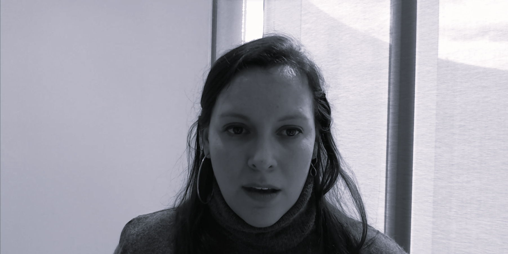

Cursos
- 2023, INAP, Curso de Capacitación: Introducción al razonamiento con datos.
- 2023, Universidad La Gran Colombia, Colombia, Taller de Capacitación: MateOrigami, una propuesta de Modelación Matemática con material concreto para profesores de matemática en formación.
- 2018–2020, DET ME, Curso de Capacitación: Producción de materiales para la enseñanza.
- 2020–2021, IUPFA, Curso corto: Tratamiento de datos en [y para] la gestión universitaria., Programa de Actualización Profesional.
- 2018–2020, MINEDUC, Guatemala, Programa de Capacitación: Matemáticas: situaciones de aprendizaje con tecnología, Profesor invitado. Autoría y edición de libro asociado al proyecto.
- 2020, DGFM MINEDUC, Bolivia, Curso: La calculadora como herramienta de apoyo en las clases virtuales de Matemática., Capacitadora internacional para el Programa virtual de Formación de Maestros.
- 2018–2019, DGEGE ME, Curso de Formación: Uso de la calculadora gráfica en el Programa del Diploma IB.
Congresos y conferencias
2023, Chile, Castro, Rodrigo; et al. Herramientas de ciencia de datos y simulación desarrolladas en universidades públicas para apoyar la toma de decisiones de respuesta al COVID-19 en Argentina. Presentación al IFORS Prize en XXIII IFORS, Santiago de Chile.
2023, Perú, Daniela Parada; César Lau. Tecnología en el aula de Matemática: nuevos ambientes de aprendizaje. Comunicación en XVI CIAEM 2023, Lima.
2023, Perú, Daniela Parada; César Lau. ¡Oye Bolt, apúrate, se enfría mi café! Diseño e implementación de actividades para el aula. Aprendizaje Basado en Modelación. Curso corto en XVI CIAEM 2023, Lima.
2023, Honduras, Daniela Parada; César Lau. Formación y ejercicio profesional: experiencias de uso de la tecnología y de la inteligencia artificial. Conferencista invitada en IV FACyT UPNFM, Tegucigalpa.
2023, Argentina, Boente, Graciela; Daniela Parada. Inferencia robusta en el modelo de regresión funcional cuadrática. Comunicación en L CAE 2023, Mendoza.
2023, Argentina, Daniela Parada; Solovey, Guillermo. Repositorio de datos curados para docencia. Una propuesta de apoyo para la enseñanza de la estadística y la ciencia de datos. Comunicación en VII JEE 2023, Mendoza.
2022, Canadá, Boente, Graciela; Daniela Parada. Robust estimators in functional quadratic regression. Conferencia en ICORS 2022, Ontario.
2022, Chile, Parada, Daniela Laura; Lau, César. Modelación: velocidad de atletas de alto rendimiento en una carrera de 100 m. Taller en XXVI JNEM, Universidad de Los Lagos, Santiago de Chile. SOCHIEM.
2022, Ecuador, Parada, Daniela Laura. Entrenamiento para la evaluación externa de MAE y MAI. Conferencista invitada en Conversatorio ASECCBI, Quito.
2022, Perú, Parada, Daniela Laura. La estadística: una herramienta matemática indispensable. Conferencista invitada en Webinar Estudios Generales, Universidad Norbert Wiener, Lima.
2022, República Dominicana, Parada, Daniela Laura; Lau, César. Inclusión de recursos tecnológicos en ABM. Curso corto en XXXII RELME 2022, Santo Domingo.
2021, Uruguay, Parada, Daniela Laura; Núñez, Myriam; Ponteville, Christiane. Identificación de prácticas frecuentes en la resolución de problemas de cálculo de probabilidades. Comunicación en XIV Congreso Latinoamericano de Sociedades de Estadística, Montevideo.
2021, Guatemala, Parada, Daniela Laura; Lau, César. Desarreglos, Combinatoria y Probabilidad para trabajar la Modelación Matemática con tecnología en el Nivel Medio. Curso Corto en XXXIV RELME, Guatemala.
2021, Perú, Parada, Daniela Laura. Matemática Educativa: los retos de la virtualidad. Conferencista invitada en UPC–CLAME. UPC, Lima.
2021, Guatemala, Parada, Daniela Laura. Tecnologías en la educación, ¿y ahora qué?. Conferencista invitada en XXIV Congreso Nacional de Matemática Educativa UMMI–USAC. USAC, Guatemala.
2019, Cuba, Parada, Daniela Laura; Lau, César. La Modelización Matemática como un recurso para los primeros cursos de Cálculo. Curso Corto en XXXIII RELME, La Habana.
2018, Colombia, Parada, Daniela Laura; Lau, César. Didáctica del Pensamiento Estocástico: la simulación en la clase de Matemática. Comunicación en XXXII RELME, Medellín.
2017, Argentina, Parada, Daniela Laura, Estrategias de innovación en Álgebra y Análisis Matemático, Ponencia en XVII Jornadas de Tecnología en Educación Matemática FCE UBA, Buenos Aires.
2017, Argentina, Parada, Daniela Laura; Crisci, Yamila; Biggeri, Rosa; Valeiro, Fabián, Prácticas inclusivas en la Educación Superior, Comunicación en I CNPEU UNDAV, Buenos Aires.
2014, Argentina, Parada, Daniela Laura, Estudio comparado de reformas curriculares, Ponencia en VIII CIDU UNR, Rosario.
2013, Argentina, Parada, Daniela Laura, Semblanza del docente universitario durante la primera mitad del siglo XX, Comunicación en I CDU UBA, Buenos Aires.
2013, Argentina, Parada, Daniela Laura; Gache, Andrea, Los programas tutoriales de la UBA, Taller en I CDU UBA, Buenos Aires.
2013, Argentina, Fraquelli, Alicia; Gache, Andrea; Parada, Daniela Laura, Sociología de la comunicación en tutorías virtuales, Comunicación en I CDU UBA, Buenos Aires.